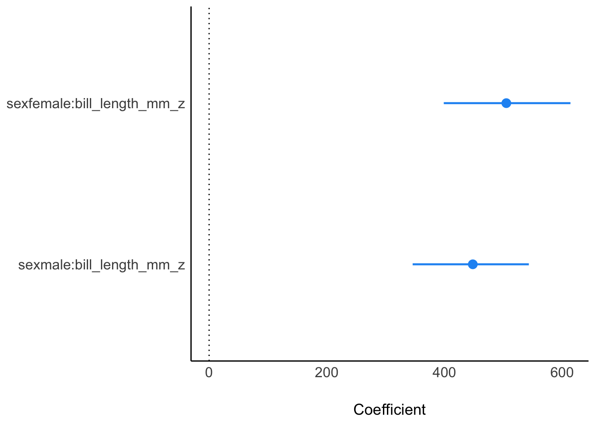

library(palmerpenguins)
library(tidyverse)
data(penguins)
penguins <-
penguins |>
filter(sex == "female" | sex == "male") |>
drop_na()fofrage-regrformel2
bayes
regression
paper
1 Aufgabe
Betrachten Sie folgende Forschungsformel:
Gibt es einen Interaktionseffekt zwischen Geschlecht und Schnabellänge auf das Gewicht eines Pinguins? Liegen auch Haupteffekte vor?
Auf Basis der folgenden Analyse ist folgende Frage zu untersuchen. Liegt ein Interaktionseffekt vor?
Hinweise:
- Unter “Haupteffekt” versteht man den Effekt einer UV auf die AV (im Gegensatz zu einem Interaktionseffekt, der ja der gemeinsame Effekt mehrerer UV auf die AV ist).
- Beachten Sie die üblichen Hinweise des Datenwerks.
- Beziehen Sie sich auf den Datensatz
penguins.
library(easystats)
library(tidyverse)
library(rstanarm)glimpse(penguins)Rows: 333
Columns: 8
$ species <fct> Adelie, Adelie, Adelie, Adelie, Adelie, Adelie, Adel…
$ island <fct> Torgersen, Torgersen, Torgersen, Torgersen, Torgerse…
$ bill_length_mm <dbl> 39.1, 39.5, 40.3, 36.7, 39.3, 38.9, 39.2, 41.1, 38.6…
$ bill_depth_mm <dbl> 18.7, 17.4, 18.0, 19.3, 20.6, 17.8, 19.6, 17.6, 21.2…
$ flipper_length_mm <int> 181, 186, 195, 193, 190, 181, 195, 182, 191, 198, 18…
$ body_mass_g <int> 3750, 3800, 3250, 3450, 3650, 3625, 4675, 3200, 3800…
$ sex <fct> male, female, female, female, male, female, male, fe…
$ year <int> 2007, 2007, 2007, 2007, 2007, 2007, 2007, 2007, 2007…Zur besseren Interpretierbarkeit sind die metrischen UV standardisiert:
penguins_z <- standardize(penguins, select = bill_length_mm, append = TRUE)Es werden verschiedenen Modelle berechnet, die sich in ihrem Regressionsformel unterscheiden:
m1 <- stan_glm(body_mass_g ~ sex, data = penguins_z,
refresh = 0)
m2 <- stan_glm(body_mass_g ~ sex + bill_length_mm_z, data = penguins_z,
refresh = 0)
m3 <- stan_glm(body_mass_g ~ sex + bill_length_mm_z + sex:bill_length_mm_z, data = penguins_z,
refresh = 0)
m4 <- stan_glm(body_mass_g ~ sex:bill_length_mm_z, data = penguins_z,
refresh = 0)Parameter m1:
| Parameter | Median | 95% CI | pd | Rhat | ESS | Prior |
|---|---|---|---|---|---|---|
| (Intercept) | 3862.77 | (3754.51, 3974.33) | 100% | 1.001 | 3757 | Normal (4207.06 +- 2013.04) |
| sexmale | 682.87 | (527.74, 838.00) | 100% | 1.000 | 4016 | Normal (0.00 +- 4020.19) |
Parameter m2:
| Parameter | Median | 95% CI | pd | Rhat | ESS | Prior |
|---|---|---|---|---|---|---|
| (Intercept) | 4003.05 | (3903.36, 4102.60) | 100% | 1.000 | 4240 | Normal (4207.06 +- 2013.04) |
| sexmale | 404.96 | (263.54, 548.73) | 100% | 1.001 | 4168 | Normal (0.00 +- 4020.19) |
| bill_length_mm_z | 405.98 | (335.34, 475.15) | 100% | 1.000 | 4183 | Normal (0.00 +- 2013.04) |
Parameter m3:
| Parameter | Median | 95% CI | pd | Rhat | ESS | Prior |
|---|---|---|---|---|---|---|
| (Intercept) | 4011.90 | (3909.94, 4111.74) | 100% | 1.001 | 2850 | Normal (4207.06 +- 2013.04) |
| sexmale | 402.86 | (258.26, 547.62) | 100% | 1.000 | 3331 | Normal (0.00 +- 4020.19) |
| bill_length_mm_z | 430.91 | (323.03, 534.95) | 100% | 1.000 | 2268 | Normal (0.00 +- 2013.04) |
| sexmale:bill_length_mm_z | -46.24 | (-193.60, 98.95) | 74.35% | 1.000 | 2372 | Normal (0.00 +- 2809.11) |
Parameter m4:
| Parameter | Median | 95% CI | pd | Rhat | ESS | Prior |
|---|---|---|---|---|---|---|
| (Intercept) | 4218.11 | (4141.49, 4297.53) | 100% | 1.000 | 5231 | Normal (4207.06 +- 2013.04) |
| sexfemale:bill_length_mm_z | 508.32 | (401.67, 616.78) | 100% | 1.000 | 4479 | Normal (0.00 +- 3079.61) |
| sexmale:bill_length_mm_z | 445.40 | (346.36, 546.72) | 100% | 1.000 | 5301 | Normal (0.00 +- 2809.11) |

2 Lösung
Die Regressionsformel lautet: body_mass_g ~ sex + bill_length_mm + sex:bill_length_mm.
Daher ist m3 korrekt.
Die Parameterwerte von m3 zeigen, dass ein Interaktionseffekt nicht bestätigt werden kann, bzw. dass die Null, also keine Interaktion, im Bereich plausibler Werte (d.h. innerhalb des Konfidenzintervalls) liegt.